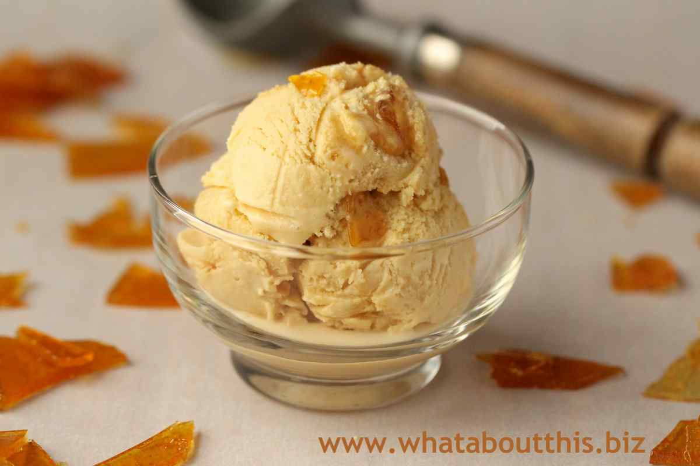
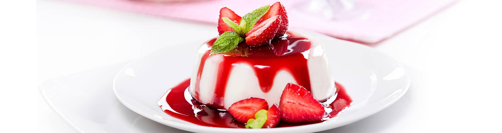

Десерти
-
Морозиво з карамеллю

Інгредієнти:
- Морозиво - 1 л
- Карамель - 1 склянка
- Горіхи - за смаком
Приготування:
- Морозиво вийняти з морозильника на 5-10 хвилин, щоб воно злегка розм'якло.
- Карамель розігріти в каструлі до стану рідкої сиропу.
- Горіхи нарізати невеликими шматочками.
- Коли карамель злегка охолола, додати до неї нарізані горіхи і перемішати.
- Морозиво подавати в склянках, зверху полити карамеллю з горіхами.
КЛАСИЧНА ПАНАКОТА З ЯГІДНИМ СОУСОМ

Інгредієнти:
- Молоко ТМ «Рудь»
- Вершки, 35 %
- Желатин
- Цукор
- Ванільний цукор
- Малина, перетерта з цукром, ТМ «Рудь»
- Заморожена полуниця ТМ «Рудь»
Приготування:
- Замочуємо желатин згідно з інструкцією на пакуванні — висипаємо у невелику глибоку посудину, заливаємо
необхідною кількістю води та залишаємо набухати.
- Коли желатин достатньо збільшиться в об’ємі, його необхідно добре прогріти на маленькому вогні. Аж до
повного розчинення у воді. Цей етап дуже важливий для приготування панакоти приємної однорідної
консистенції.
- Молоко змішуємо з вершками та ставимо на плиту підігріватися. Кип’ятити суміш не потрібно.
- Додаємо до вершково-молочної суміші звичайний та ванільний цукор. Ретельно перемішуємо, доки кристалики
повністю не розчиняться.
- У суміш вершків та молока тонким струменем наливаємо розчинений желатин. Щоб уникнути потрапляння в десерт
крихітних грудочок, попередньо проціджуємо желатинову суміш через дрібне ситечко.
Отриману масу розливаємо у силіконові формочки та залишаємо на три години в холодильнику для застигання.
- Поки панакота застигає, приготуємо соус. Розморожуємо полуницю, викладаємо в блендер. Додаємо малину,
перетерту з цукром, та збиваємо протягом трьох хвилин.
- Виймаємо панакоту з формочок.
Маленька хитрість: смакувати десертом краще не одразу з холодильника. Дайте панакоті годинку постояти за
кімнатної температури. Так її смак ще краще розкриється, а консистенція стане більш м’якою та ніжною.
- Поливаємо панакоту ягідним соусом. Прикрашаємо м’ятою, свіжими ягодами або шматочками фруктів.
Насолоджуйтесь!
Потім рецептів буде БІЛЬШЕ!